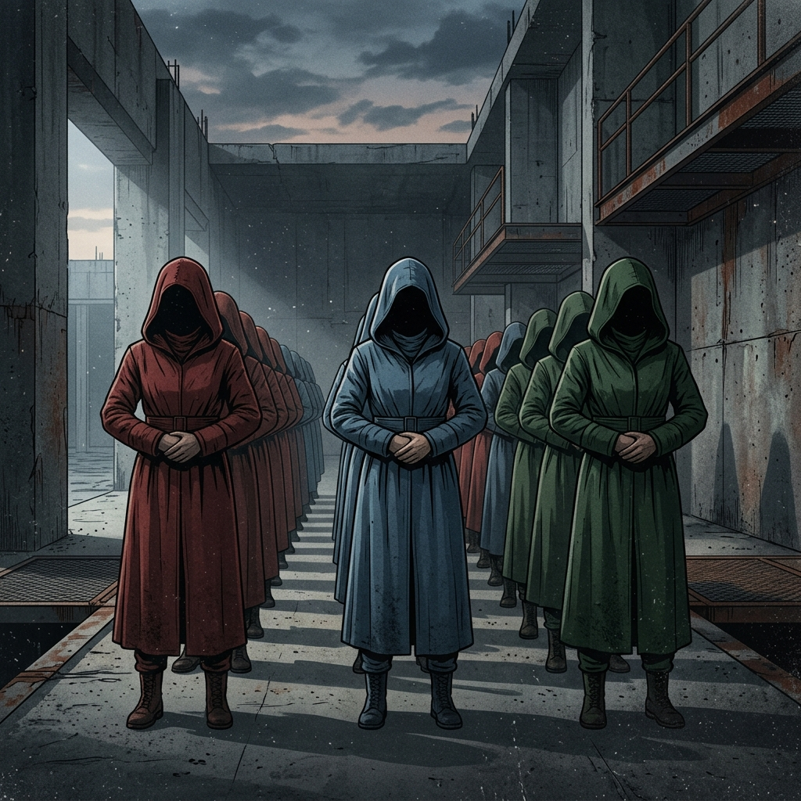

Gender Lens
The gender lens demonstrates that the Gileadian society is completely dominated by men. Men have taken away all forms of financial/property rights as well as reading and writing abilities from the women. A casted system has also been created among the woman so they do not organize against each other using color codes. Specifically, handmaids wear red, wives are represented wearing blue, and martha’s wear green. It illustrates the ways in which patriarchy uses systematic controls of women's bodies to create societal structure and stability.

Psychological Lens
A second lens in addition to the gender lens is provided through Atwoods work on the psychological damage caused by being held captive. Psychological harm is apparent in Offreds ability to disconnect or dissociate from her experiences and see herself as alienated from her own body; "I used to think of myself as having a tool...The flesh now makes arrangements for me differently. I am a cloud around a center of things" (Atwood 73). Therefore, using this lens we are able to see how, at some point when individuals are so traumatized because of their oppression, there will develop a disintegration of self in survivors of that type of trauma.
References:
- Atwood, Margaret. The Handmaid's Tale. Random House, 1986